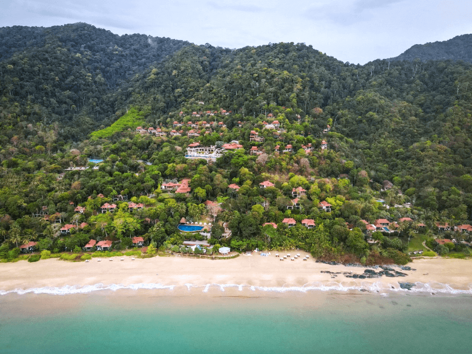
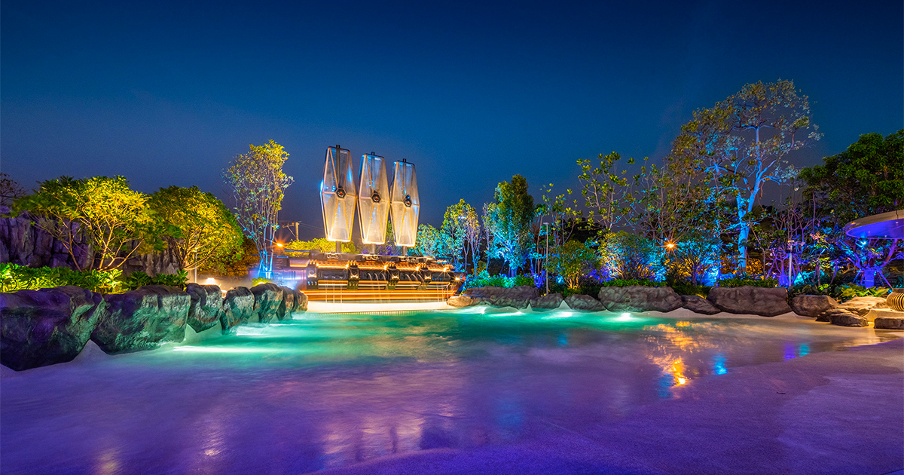

Thailand
Hoveddestinasjonene i Thailand
Velg stedet som passer reisestilen din. Hvert reisemål har sin egen guide med bilder, områdevalg, hotell og opplevelser.
Når bør du reise? Som enkel tommelfingerregel er november til mars tryggest for Phuket, Krabi, Koh Lanta, Phi Phi og Khao Lak. Koh Samui, Koh Phangan og Koh Tao fungerer ofte bedre når vestkysten har mer regn. Bangkok, Hua Hin, Pattaya og østøyene kan kombineres store deler av året, men sjekk transport og sjøforhold hvis du skal videre til Koh Mak eller Koh Kood.

Strand og resort
Phuket
Strender, familiehoteller, strandklubber, øyhopping og trygg første Thailand-base.
Åpne Phuket →
Kalkstein og øyhopping
Krabi
Railay, longtailbåter, kalksteinsklipper og rolige stranddager.
Åpne Krabi →
Templer og fjell
Chiang Mai
Nord-Thailand med templer, markeder, matkurs, fjell og boutiquehoteller.
Åpne Chiang Mai →
Resort og øyliv
Koh Samui
Komfortabel øyferie med spa, villas, strandklubber og enkel øyhopping.
Åpne Koh Samui →
Solnedgang og wellness
Koh Phangan
Yoga, skjulte strender, Full Moon når du vil, og rolige bukter resten av tiden.
Åpne Koh Phangan →
Snorkling og dykking
Koh Tao
Klarere vann, dykkekurs, viewpoints, små bukter og aktivt øyliv.
Åpne Koh Tao →
Resort og lange strender
Khao Lak
Rolig familieferie, lange strender, marked og Similan-utflukter.
Åpne Khao Lak →
Rolig øyliv
Koh Lanta
Familievennlige strender, god plass, roligere tempo og små restauranter.
Åpne Koh Lanta →
Strandby nær Bangkok
Hua Hin
Strand, nattmarkeder, golf, spa og kort reisevei fra Bangkok.
Åpne Hua Hin →
Strandby og aktiviteter
Pattaya
Kort vei fra Bangkok, Jomtien, familieaktiviteter, Koh Larn og rooftop.
Åpne Pattaya →
Bukter og snorkling
Koh Phi Phi
Vakre bukter, snorkling og resorter når du vil bli mer enn en dagstur.
Åpne Koh Phi Phi →
Turkist vann
Koh Lipe
Liten øy helt sør med snorkling, små resorter og Maldivene-følelse.
Åpne Koh Lipe →
Jungel og strender
Koh Chang
Stor grønn øy med fossefall, strender, kajakk og roligere øyliv øst i Thailand.
Åpne Koh Chang →Liten og rolig øy
Koh Mak
Sykler, korte avstander, stranddager og lav puls mellom Koh Chang og Koh Kood.
Åpne Koh Mak →Bukter og lav puls
Koh Kood
Turkist vann, fossefall, resortdager og noen av Thailands roligste strender.
Åpne Koh Kood →
Hotell
Hotell vi ville sammenlignet i Thailand
Direkte partnerlenker til utvalgte hotell i Bangkok, Phuket, Koh Samui, Krabi, Chiang Mai, Koh Tao, Khao Lak og Hua Hin.
Bangkok · luksusCapella BangkokRolig premiumhotell langs Chao Phraya-elven.Se hotellet
Bangkok · ikoniskMandarin Oriental BangkokKlassisk Bangkok-luksus med spa og elvefølelse.Se hotellet
Bangkok · mat og bassengFour Seasons BangkokModerne resortfølelse midt i byen.Se hotellet
Bangkok · rooftopThe Standard Bangkok MahanakhonTrendy base for skyline, rooftop og byliv.Se hotellet
Bangkok · best for pengeneGrande Centre Point Terminal 21Sentralt ved shopping, BTS og Sukhumvit.Se hotellet
Bangkok · familieChatrium Riverside BangkokStore rom og roligere base ved elven.Se hotellet
Bangkok · rooftop poolAmara BangkokSkylinebasseng og mye hotell for pengene.Se hotellet
Bangkok · backpackerLub d Bangkok SiamSosialt, sentralt og rimelig.Se hotellet
Bangkok · sosialtMad Monkey BangkokFor deg som vil bo rimelig og møte folk.Se hotellet
Bangkok · rolig hostelThe Yard Hostel BangkokAvslappet hostel-vibe i grønnere omgivelser.Se hotellet
Phuket · villaSri Panwa PhuketPoolvillaer, utsikt og wow-faktor.Se hotellet
Phuket · romantikkThe Shore at KatathaniVoksen resort med private poolvillaer.Se hotellet
Phuket · ultra-luksusRosewood PhuketEksklusivt valg for design, ro og service.Se hotellet
Phuket · strand og utsiktThe Nai HarnElegant hotell ved en av Phukets fineste bukter.Se hotellet
Phuket · familieCentara Grand Beach Resort PhuketStrandresort med basseng og feriekomfort.Se hotellet
Phuket · barnSunwing Kamala BeachTrygt og populært blant skandinaviske familier.Se hotellet
Koh Samui · honeymoonFour Seasons Resort Koh SamuiVillaer, ro og havutsikt.Se hotellet
Koh Samui · spaSilavadee Pool Spa ResortRomantisk, rolig og luksuriøst.Se hotellet
Koh Samui · villa-luksusBanyan Tree SamuiPrivate villaer, spa og rolig resortfølelse.Se hotellet
Koh Samui · lifestyleW Koh SamuiBeach club-vibe, design og loungefølelse.Se hotellet
Krabi · naturRayavadeeBucketlist-hotell mellom klipper og strand.Se hotellet
Krabi · strandCentara Grand Beach Resort KrabiGod base for familieferie og øyhopping.Se hotellet
Krabi · resortDusit Thani Krabi Beach ResortRolig strandhotell med klassisk resortstemning.Se hotellet
Chiang Mai · boutique137 Pillars HouseElegant base for kulturreise og ro.Se hotellet
Chiang Mai · spaAnantara Chiang Mai ResortPremium elvehotell for voksne og spa.Se hotellet
Chiang Mai · komfortShangri-La Chiang MaiKlassisk komfort og god førstegangsbase.Se hotellet
Koh Tao · dykkingJamahkiri Resort & SpaResortfølelse, snorkling og dykking.Se hotellet
Koh Tao · snorklingSai Daeng ResortAvslappet øyhotell med utsikt.Se hotellet
Khao Lak · familieThe Sands Khao Lak by KatathaniBasseng, strand og roligere ferie.Se hotellet
Khao Lak · beach clubLa Vela Khao LakModerne strandhotell for par og voksne.Se hotellet
Hua Hin · strandInterContinental Hua Hin ResortKlassisk luksus ved stranden.Se hotellet
Hua Hin · familieHyatt Regency Hua HinTrygt resortvalg med basseng og strand.Se hotellet
Noen lenker er annonselenker. Det påvirker ikke prisen for deg.
Opplevelser
Opplevelser å sjekke før du reiser
Populære Thailand-opplevelser der pris, avgangstid og tilgjengelighet ofte varierer.
BangkokFloating Market & Maeklong Railway MarketMarked, tog og dagstur fra byen.Se turer
BangkokChao Phraya Dinner CruiseKveld på elven med middag og skyline.Se cruise
Chiang MaiElefantreservat i Chiang MaiVelg små grupper og tydelig program.Se turer
ØyhoppingPhi Phi Islands båtturSnorkling, bukter og tidlig avreise.Se båtturer
MatkursThailandsk matkursGod aktivitet i Bangkok, Chiang Mai, Krabi eller Phuket.Se matkurs
ShowSiam Niramit Show i BangkokKveld med kultur og underholdning.Se show
Ruter
Tre enkle måter å bygge reisen på
Første Thailand-reise
- Bangkok i 2-3 netter
- Phuket eller Krabi i 5-7 netter
- Avslutt med roligere strand eller spa
Island escape
- Koh Samui for komfort og resort
- Koh Phangan for sunsets og wellness
- Koh Tao for snorkling og dykking
Storby + nord
- Bangkok for mat og shopping
- Chiang Mai for templer og fjell
- Avslutt med Phuket, Krabi eller Samui